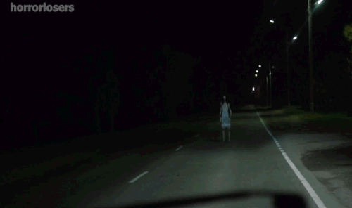

 Lleva circulando siglos, adaptándose a los distintos medios de transporte. Consiste básicamente en que una mujer hace autostop al borde de una carretera: Un coche se detiene y se sube a la parte de atrás. Al llegar a una peligrosa curva, la autoestopista advierte del peligro. Cuando el vehículo ha rebasado la curva, la mujer ha desaparecido misteriosamente. Luego, el conductor, o conductor y copiloto, se entera de que en ese punto murió trágicamente una mujer. En algunas versiones, la pasajera no avisa del peligro y el coche sufre un accidente y mueren conductor o pasajeros, aunque siempre queda algún superviviente, claro, para poder contar la historia. En nuestro país la fatídica curva se ubica en el puerto de la Cruz Verde, un paso de montaña de la sierra de Guadarrama, y se dice que hay otra curva con su fantasma en el puerto de Galapagar. También hay variaciones en las que el autoestopista es un padre angustiado que tiene que llegar como sea al lecho de su hijo moribundo. O ancianas siniestras que anuncian el fin del mundo. A veces es una novia vestida de blanco que murió el día de su boda. Vamos, que hay versiones para todos los gustos.